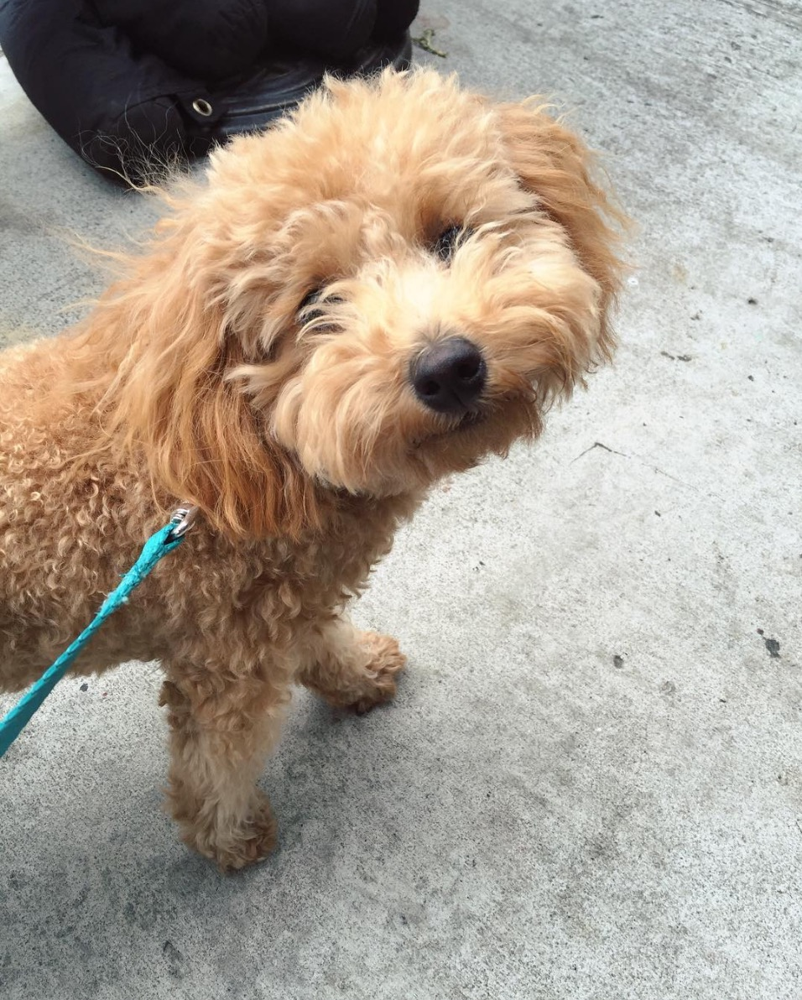

Content marketing and social media are what I’m into. In my spare time, I’m lying in bed, scrolling through Instagram looking at pictures of dogs. At work, I’m sitting at my desk, retweeting pictures of dogs. I want to help businesses and small brands to build the perfect online communities for their customers. I’m a curious and analytical person with an interest in social media marketing who has interned for two small businesses, helping to develop digital identity and build community. And now, I work at a content marketing agency, helping big businesses get a piece of that online content pie.
In my spare time, I pretend to blog and I look at pictures of dogs on the Internet and think multiple times per day, “Ohmygod, it’s so cute I’m going to die.”

Other things that float my boat are dogs, art+architecture, and generic goofy web things.
I live in Brooklyn. It’s kewl.
I also manage my puppy niece’s (A.K.A. my sister’s dog’s) Instagram. Please follow us.
